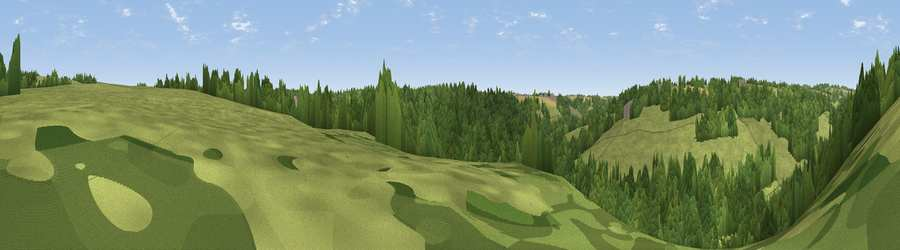

Viewpoint near Sapperton
#44982 in England · top 96% of its area beats it · near SappertonThe view, rendered

A 360° render of this exact spot computed from the terrain model, tree cover and land cover — summer colours, afternoon light, calibrated against photographs of famous viewpoints. Real trees, hedges and buildings will differ in detail.
The panorama
Grey silhouette: terrain skyline in each direction (720 bearings, Earth curvature and refraction included). Dashed green: skyline with trees (+15 m) and buildings (+8 m) as obstacles. Blue strip: how far the ground is visible on each bearing.
Where the view opens
Wedge length = distance to the farthest visible ground on that bearing (vegetation-aware). Rings at 10, 25 and 50 km.
What fills the view
51% woodland · 44% grassland · 4% cropland
Angular shares of the visible panorama (visual magnitude), not map area. Landscape diversity 0.37 (0–1 Shannon).
Key numbers
More beautiful places nearby
The staircase of upgrades: each row has a higher view potential than everything closer. Driving times are estimates from straight-line distance, calibrated against real road routing — check an actual route before setting out.
| Place | Direction | Drive | Score |
|---|---|---|---|
| Viewpoint near Sapperton | SSE · 1 km | ~3 min | 25.4 |
| Sapperton Hill | ESE · 2 km | ~5 min | 45.2 |
| Viewpoint near Bisley | NW · 5 km | ~11 min | 48.4 |
| Viewpoint near Whiteway | NNW · 5 km | ~11 min | 50.0 |
| Viewpoint near Slad | WNW · 6 km | ~12 min | 55.8 |
| Viewpoint near Great Witcombe | NNW · 10 km | ~19 min | 65.7 |
| Birdlip Hill | N · 10 km | ~20 min | 71.7 |
| Painswick Beacon | NW · 11 km | ~20 min | 79.6 |
51.73310, -2.09661 · source: screening · position refined by local search. Computed location — check access rights before visiting.